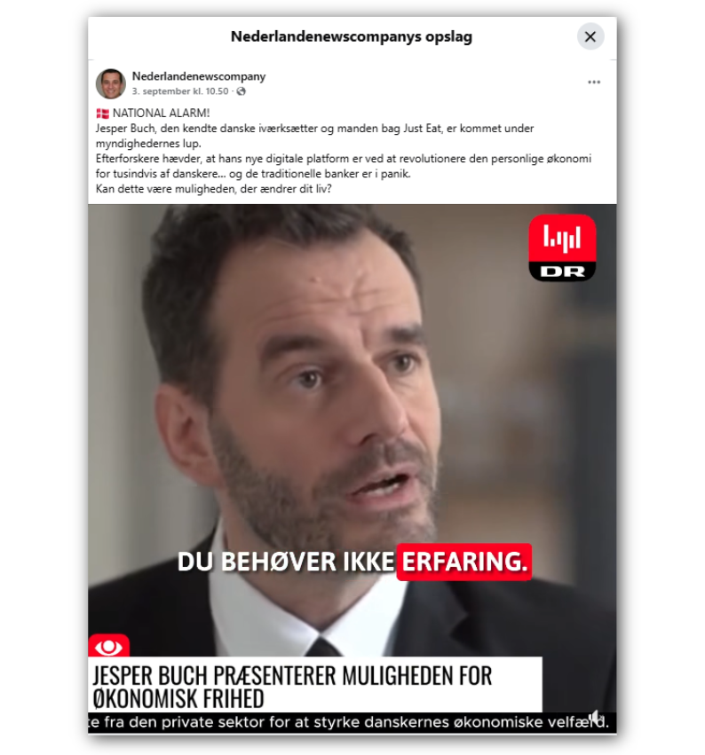

Sådan undgår du svindel
Svindlere vil have dine penge, dine koder eller dit MitID. Her lærer du at se, når en besked er falsk. Og hvad du gør, hvis uheldet er ude.
5 tegn på svindel
Her er et eksempel på en falsk SMS:
SMS fra: PostNord
Din pakke kan ikke leveres. Du mangler at betale told på 12,50 kr. Betal inden 24 timer, ellers sendes pakken retur.
Link i beskeden: postnord-dk-levering.com/betal
Læg mærke til disse tegn:
- Der er travlt. ”Betal inden 24 timer” eller ”Din konto lukkes i dag”. Svindlere vil have dig til at handle, før du når at tænke rationelt.
- Du skal bruge MitID via et link. Din bank, Skat og MitID beder dig aldrig om at logge ind via et link i en SMS eller mail.
-
Linket er næsten rigtigt. Se på slutningen af adressen. ”postnord.dk”
er ægte. ”postnord-dk-levering.com” er falsk.
* I nogle tilfælde kan adressefelter, email og telefonnummer-ID være identiske til dem svindleren prøver at efterligne.
- Du skal betale et lille beløb. 12,50 kr. i told eller 29 kr. i fragt. Beløbet er lille, men målet er at få dine kortoplysninger.
- En ”ven” har fået nyt nummer. ”Hej mor, jeg har tabt min telefon” eller ”Kan du låne mig penge på MobilePay?”. Ring altid til personen på det gamle nummer først.
De mest almindelige typer svindel
Undersøgelsen ’Ældre borgeres erfaringer med kontaktbedrageri’ fra 2026 er udarbejdet af Roskilde Universitet for Det Kriminalpræventive Råd. Undersøgelsen bygger på 15 dybdegående interviews med ældre (primært fra 60 år og opefter, men en enkelt person er i 40’erne), der har været udsat for kontaktbedrageri og to interviews med pårørende. De forskellige interviews giver et unikt indblik i både svindlens forløb og de efterfølgende konsekvenser. Derudover har der været fem baggrundsinterviews med bl.a. medarbejdere fra politiet og Ældre Sagen.
- Teaterstykket (Også kaldet ‘telefonbedrageri’): Der er tale om svindel, hvor offeret bliver kontaktet over telefonen af en svindler, der udgiver sig for at være fra banken. Offeret overfører penge, da svindleren fortæller, at der er penge, som skal flyttes, da ofrets konto er ved at blive hacket.
- Hej mor/far sms (Også kaldet ‘SMS-svindel’ eller ‘Bekendt i knibe-svindel'): Der er tale om svindel, hvor offeret modtager en sms fra en svindler, som udgiver sig for at være vedkommendes søn eller datter, der har mistet sin telefon og derfor har brug for penge.
- Sort skærm: Der er tale om svindel via en computer, som pludselig viser en sort skærm med et telefonnummer. Via telefonopkaldet får offeret får besked på at overføre penge i form af et gebyr for at få hjælp til at tilslutte skærmen igen.
- Svindel med muldyr (også kaldet ‘falske bankbude’): Der er tale om svindel, som starter som telefonsvindel, hvor offeret får at vide, at vedkommendes dankort eller konto er blevet hacket. Herefter instrueres offeret i, at et såkaldt ‘bankbud’ (kaldes i rapporten muldyr) vil dukke op på offerets adresse for at hente personens dankort, da det angiveligt er blevet spærret. Bankbuddet er en svindler, der udgiver sig for at være fra banken.
- Investeringssvindel: Der er tale om svindel gennem reklamer for investeringer som f.eks. udenlandske aktier. Ritzau
AI-svindel
Med AI kan svindlere lave falske videoer af kendte personer. Det kaldes en deepfake. De kan også kopiere en stemme ud fra en kort video fra sociale medier.
Stil dig selv 3 spørgsmål
- Hvem står bag, og kan jeg stole på dem?
- Skal jeg betale eller gøre noget hurtigt?
- Kan jeg finde det samme hos en kilde, jeg stoler på?
Ringer en i familien og mangler penge? Så læg på. Ring selv tilbage på det nummer, du kender.

Dette er et rigtigt eksempel på deepfake der prøver at narre dig for kreditkortoplysninger ved at bruge Jesper Buchs ansigt.
Kilde: Tjekdet.dk
Hvis uheldet er ude
- Ring til din bank, og spær dit kort.
- Skift dine koder.
- Anmeld svindlen til politiet på politi.dk.
- Fortæl det til en, du stoler på. Det er ikke din skyld.